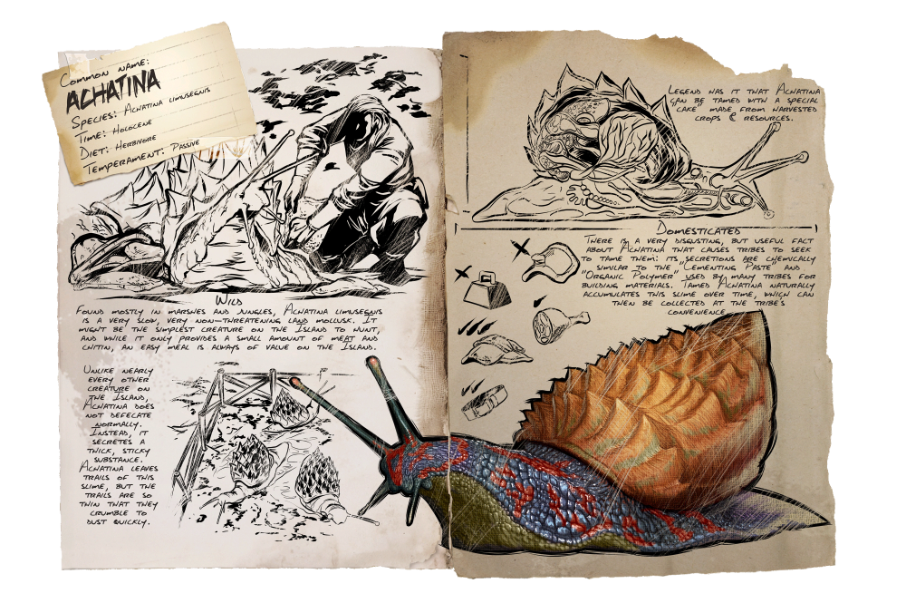
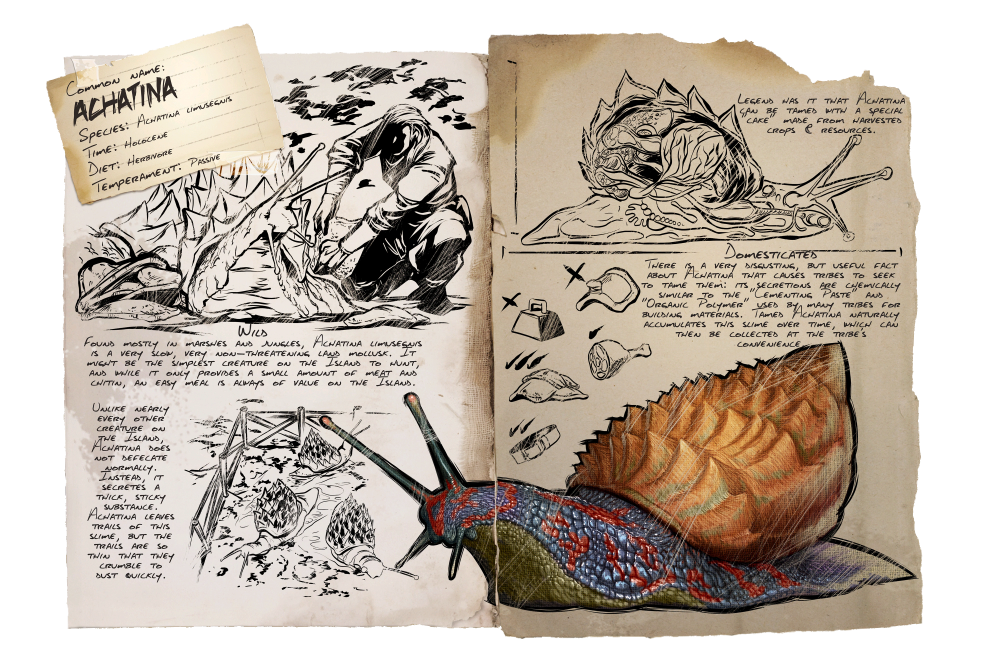
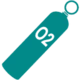
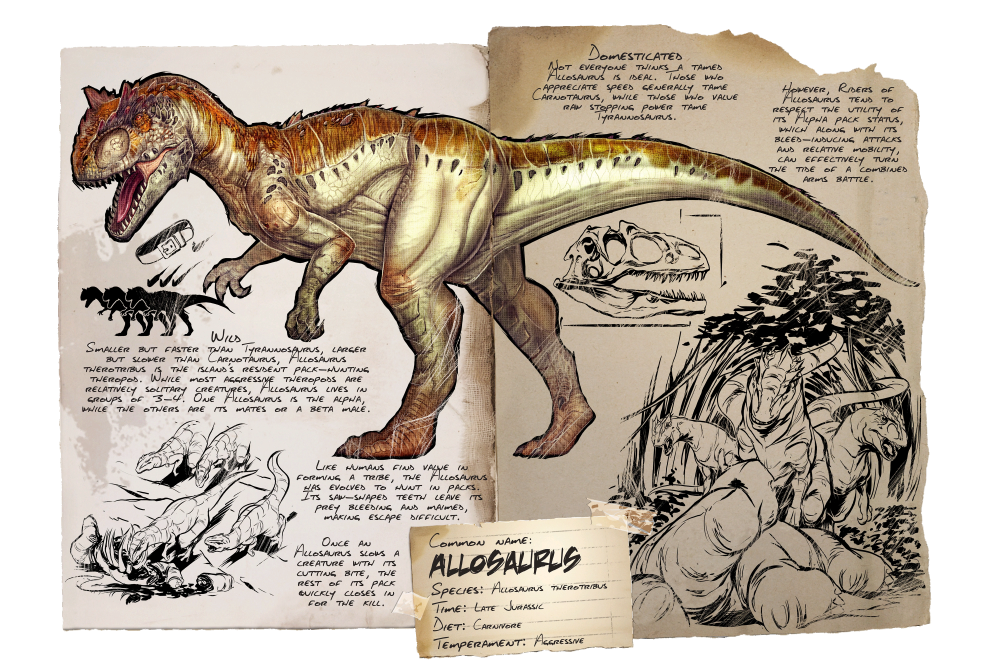
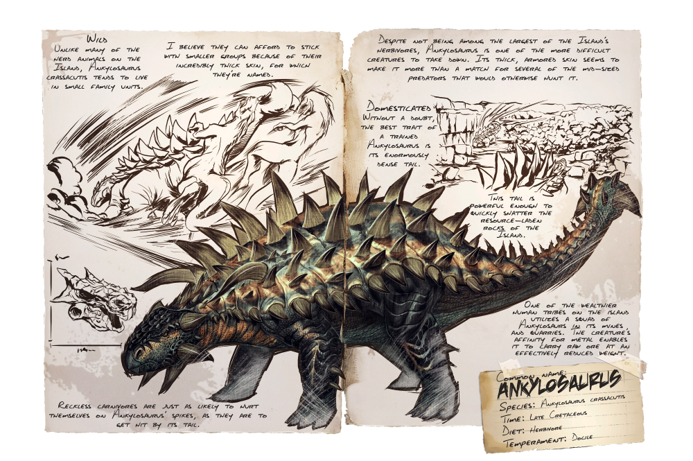
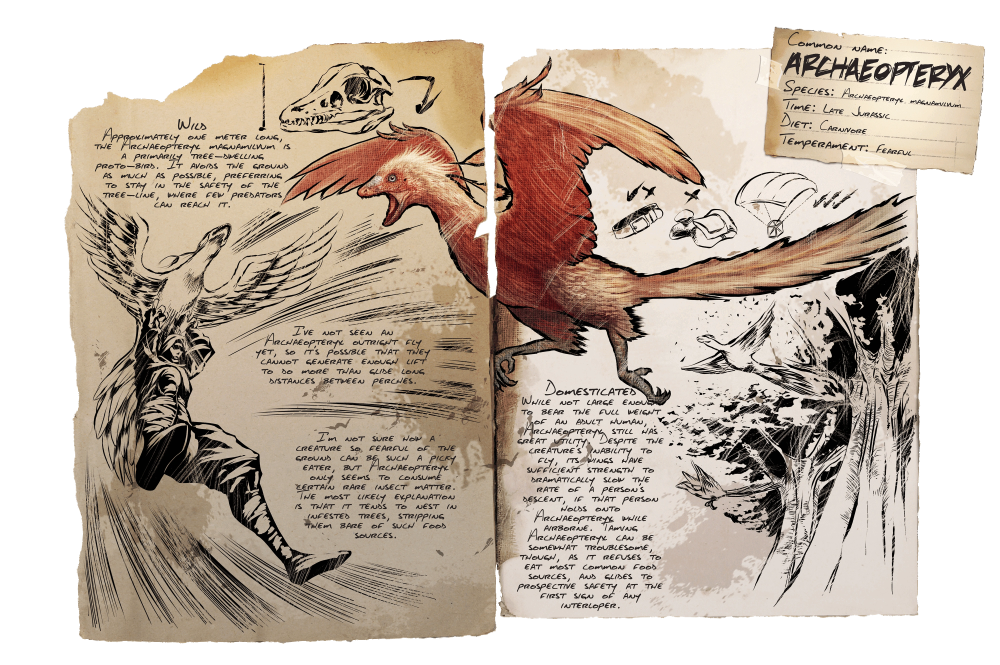
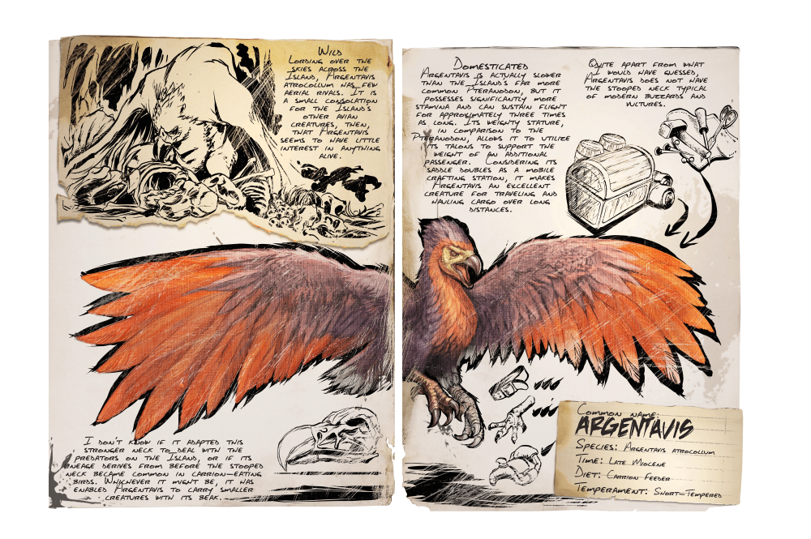
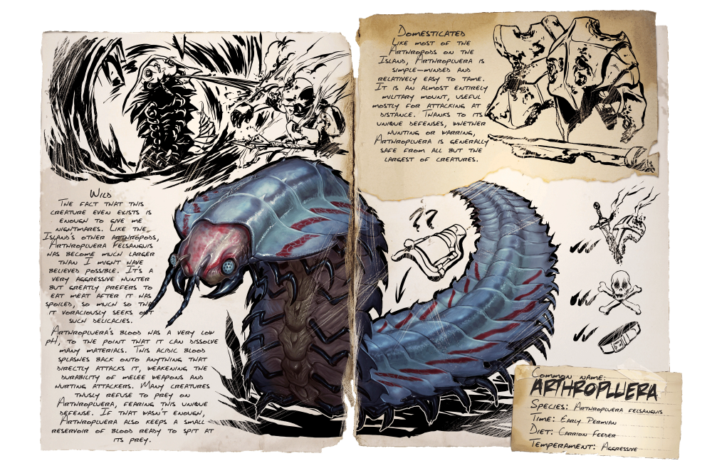

Caracol-Gigante
Herbívoro 

| Atributos | Valores Base | Level Up Selvagem | Level Up Domesticado |
| Saúde | 75 | +15 | +5.4% |
| Energia | 100 | +10 | +10% |
| Oxigênio | N/A | N/A | N/A |
| Comida | 450 | +45 | +10% |
| Peso | 600 | +12 | +4% |
 Dano corpo-a-corpo Dano corpo-a-corpo |
0 | +0 | + 1.7% |
 Velocidade de movimento Velocidade de movimento |
100% | N/A | +1% |
| Entorpecimento | 50 | +3 | N/A |
Espécies:
Achatina limusegnis
Tempo:
Holoceno
Dieta:
Herbívoro
Temperamento:
Passiva
Selvagem
Encontrado principalmente em pântanos e selvas, a Achatina limusegnis é um molusco terrestre muito lento e não ameaçador. Pode ser a criatura mais simples da Ilha para caçar e, embora forneça apenas uma pequena quantidade de carne e quitina, uma refeição fácil é sempre valiosa na Ilha. Ao contrário de quase todas as outras criaturas da Ilha, a Achatina não defeca normalmente. Em vez disso, secreta uma substância espessa e pegajosa. A Achatina deixa rastros desse lodo, mas os rastros são tão finos que se transformam em pó rapidamente.
Domesticado
Há um fato muito nojento, mas útil, sobre Achatina que faz com que as tribos procurem domá-los: suas secreções são quimicamente semelhantes à "Pasta de Cimentação" e ao "Polímero Orgânico" usado por muitas tribos para materiais de construção. A Achatina domesticada acumula naturalmente esse lodo ao longo do tempo, que pode ser coletado conforme a conveniência da tribo. Diz a lenda que a Achatina pode ser domado com um "bolo" especial feito de colheitas e recursos colhidos.
~Helena
O Caracol-Gigante passa seus dias movendo-se lentamente em seu grande pé musculoso, deixando um rastro de lodo; e presta pouca atenção a tudo ao seu redor enquanto pasta em pequenas plantas e musgos. Achatina é uma das poucas criaturas verdadeiramente dóceis na Ilha e em outros mapas, pois fugirá, embora em um ritmo muito lento, até se machucar tanto que se esconderá em sua concha. Seu comportamento de se esconder em sua concha também é compartilhado pelo Doedicurus . Dentro desta concha, não pode ser ferido, a menos que um sobrevivente tente incansavelmente romper com uma arma ou domar. Usar flechas de pedra e atirar no fundo do projétil causará danos, embora você possa precisar de muitas flechas, dependendo da sua arma.
Este enorme caracol pode ser comumente encontrado em biomas úmidos, como florestas de sequoias e coníferas, pântanos, a cidade Santuário em Extinção e a Zona Azul em Aberração . Cavernas de terra arrasada têm uma variante de alto nível da Achatina. A Achatina está visivelmente ausente da simulação de Gênesis: Parte 1 . Curiosamente e muito diferente dos caracóis da terra moderna, a Achatina das Arcas pode ocasionalmente ser encontrada submersa na água sem se afogar.
Não é nem um pouco inteligente, embora pareça que seu prazer gastronômico de alimentos doces como bolos de vegetais doces possa ser explorado para reivindicá-lo como manso.
Estratégia de KO
Como o dano é significativamente reduzido pelo projétil, é melhor acertá-lo nas partes macias e carnudas. Se sofrer dano suficiente, ele recuará para sua concha, tornando muito fácil matá-lo antes que o torpor dos tranquilizantes possa derrubá-lo. Esteja ciente de quão sangrenta a Achatina fica e use Dardos Tranquilizantes Chocantes ou Dardos Tranquilizantes normais para minimizar esse risco.
Comida preferida
Bolo Doce de Legumes
Comida depois de domar
Uma Achatina domesticado só comerá Bolo Doce de Legumes, por isso é aconselhável não domar uma Achatina a menos que tenha um suprimento constante de Seiva, Mel de Abelha Gigante, e plantações como Batatas para fazer bolos.
Observe que todos as pilhas de bolos entrarão em um cooldown de 30 segundos após o consumo, durante o qual o jogo fará com que o caracol pense temporariamente que não há comida no inventário.
Em geral
Se engajado e danificado, a Achatina recuará em sua concha e não fugirá nem lutará. O dano causado à Achatina será fortemente reduzido enquanto estiver dentro de sua concha. Achatinas, no entanto, soltam uma quantidade considerável de quitina quando colhidas, por isso são uma matança digna para quem procura coletá-la, às custas do tempo e esforço necessários para matar uma.
Estratégia
Embora a Achatina em si não seja perigosa, seus arredores geralmente estão cheios de predadores perigosos. Limpe a área de criaturas hostis antes de tentar domar Achatinas, ou pegue-as com uma montaria voadora. Um Argentavis pode carregar dois Achatina ao mesmo tempo usando suas garras e bico
Armamento
Qualquer arma ou criatura será capaz de matar suficientemente um Achatina em pouco tempo, embora se deva atirar no Achatina com dardos tranquilizantes para derrubá-lo para domar, pois há pouco benefício em exterminá-los.
Fraquezas
Achatinas selvagens às vezes recebem dano ao longo do tempo aleatoriamente como resultado de serem nocauteadas por Titanoboas, acordando e tendo sua comida reduzida a 0 no processo.
Achatinas - selvagens e domesticadas - não revidam e não podem revidar quando atacado.
Alossauro
Carnívoro

| Atributos | Valores Base | Level Up Selvagem | Level Up Domesticado |
| Saúde | 630 | +126 | +5.4% |
| Energia | 250 | +25 | +10% |
| Oxigênio | 150 | +15 | +10% |
| Comida | 3000 | +300 | +10% |
| Peso | 380 | +7.6 | +4% |
| Dano corpo-a-corpo |
25/35 | +1.25/+1.75 | + 1.7% |
| Velocidade de movimento |
100% | N/A | +1% |
| Entorpecimento | 1000 | +60 | N/A |
Espécies:
Allosaurus therotribus
Tempo:
Jurássico Superior
Dieta:
Carnívoro
Temperamento:
Agressivo
Selvagem
Menor, mas mais rápido que o Tiranossauro, maior, mas mais lento que o Carnotaurus, o Allosaurus therotribus é o terópode residente da ilha. Enquanto os terópodes mais agressivos são criaturas relativamente solitárias, o Allosaurus vive em grupos de 3. Um Allosaurus é o alfa, enquanto os outros são seus companheiros ou um macho beta. Assim como os humanos valorizam a formação de uma tribo, o Allosaurus evoluiu para caçar em bandos. Seus dentes em forma de serra deixam sua presa sangrando e mutilada, dificultando a fuga. Uma vez que um Allosaurus desacelera uma criatura com sua mordida cortante, o resto de sua matilha rapidamente se aproxima para matar.
Domesticado
Nem todo mundo acha que um Allosaurus domesticado é o ideal. Aqueles que apreciam a velocidade geralmente domam o Carnotaurus, enquanto aqueles que valorizam o poder de parada bruto domam o Tyrannosaurus. No entanto, os cavaleiros do Allosaurus tendem a respeitar a utilidade de seu status de pacote Alpha, que, juntamente com seus ataques indutores de sangramento e mobilidade relativa, pode efetivamente mudar a maré de uma batalha de armas combinadas.
~Helena
Anquilossauro
Herbívoro

| Atributos | Valores Base | Level Up Selvagem | Level Up Domesticado |
| Saúde | 700 | +140 | +5.4% |
| Energia | 175 | +17.5 | +10% |
| Oxigênio | 150 | +15 | +10% |
| Comida | 3000 | +300 | +10% |
| Peso | 250 | +5 | +4% |
| Dano corpo-a-corpo |
30/50 | +1.5/2.5 | +1.7% |
| Velocidade de movimento |
100% | N/A | +2% |
| Entorpecimento | 420 | +25.2 | N/A |
Arqueopterix
Carnívoro

| Atributos | Valores Base | Level Up Selvagem | Level Up Domesticado |
| Saúde | 125 | +25 | +5.4% |
| Energia | 150 | +15 | +10% |
| Oxigênio | 150 | +15 | +10% |
| Comida | 900 | +90 | +10% |
| Peso | 30 | +0.6 | +4% |
| Dano corpo-a-corpo |
5 | +0.25 | + 1.7% |
| Velocidade de movimento |
100% | N/A | +1% |
| Entorpecimento | 100 | +6 | N/A |
Argentavis
Necrófago

| Atributos | Valores Base | Level Up Selvagem | Level Up Domesticado |
| Saúde | 365 | +73 | +6.075% |
| Energia | 400 | +20 | +7.5% |
| Oxigênio | 150 | +15 | +10% |
| Comida | 2000 | +200 | +10% |
| Peso | 400 | +8 | +5.5% |
| Dano corpo-a-corpo |
12/25 | +0.6/1.25 | +2.55% |
| Velocidade de movimento |
100% | N/A | +0% |
| Entorpecimento | 600 | +36 | N/A |
Centopéia-Gigante
Necrófago

| Atributos | Valores Base | Level Up Selvagem | Level Up Domesticado |
| Saúde | 500 | +100 | +5.4% |
| Energia | 200 | +20 | +10% |
| Oxigênio | N/A | N/A | N/A |
| Comida | 1200 | +120 | +10% |
| Peso | 100 | +2 | +4% |
| Dano corpo-a-corpo |
18/30 | +0.9/+1.5 | + 1.7% |
| Velocidade de movimento |
100% | N/A | +1% |
| Entorpecimento | 175 | +10.5 | N/A |